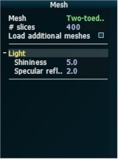
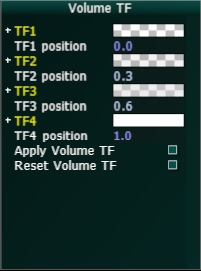
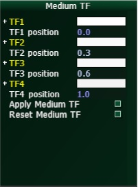
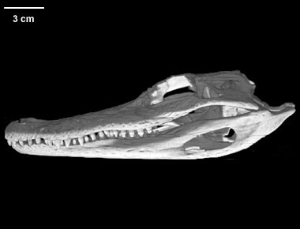
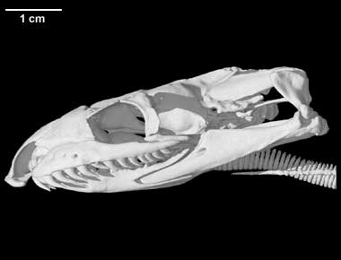
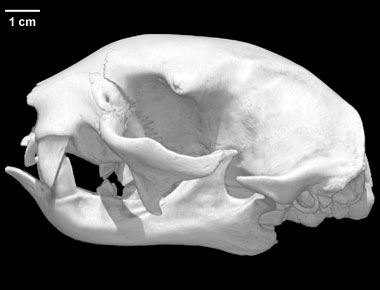
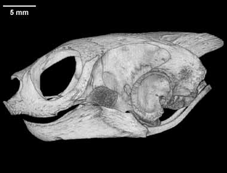
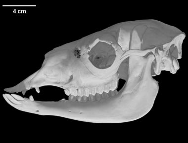

Interactive Dynamic Volume Illumination with Refraction and Caustics

Description
Original paper

This program is an implementation of the paper "Interactive Dynamic Volume Illumination with Refraction and Caustics" by Jens G. Magnus and Stefan Bruckner.
The paper presents a method for interactive rendering of volumetric data by utilizing refraction and caustic effects,
arguing that human perception is capable of reconstructing spatial properties of objects given the presence of distortions caused by refraction.
In comparison to offline rendering methods, no precomputation is necessary. In addition, it is possible to change rendering parameters interactively.
The technique is realized by applying a Semi-Lagrangian scheme to propagate light and viewing rays simultaneously.
The light rays are integrated backward in a plane-by-plane manner. The viewing rays are transmitted forward through the volume.
The planes are generated parallel to the image plane.
Implementation concept
The concept is based on the described pseudocode and consists of the following steps:
- Load models and corresponding transfer functions & initialize all scene parameters like camera and light source.
- Create sphere around model and calculate first plane parallel to image plane intersection with this sphere.
This plane will be used as reference plane for the plane-by-plane calculations.
- Initialize 7 framebuffers with 2 layers for light color and direction, viewing ray position and
direction, accumulated color and medium buffer and the output buffer by means of a compute shader.
These buffers will be used to read the previous and write the information for the current layer in a ping-pong manner.
- Perfrom light ray propagation by backward-integration together with light intensity correction and view ray propagation
by forward-integration in every rendering step.
Step 4 is the main part of the program. It splits into light and viewing ray propagation.
PUT HERE WHAT FRAGMENT SHADER DOES
Program
The program was implemented in a C++ framework, uses OpenGL 4.4 and therefore needs a Nvidia platform.
Camera interaction
By pressing "Tab", the interaction mode can be switched between mouse movement and UI interaction.
The mouse movement mode is active, if no mouse cursor is visible. PUT HERE HOW CAMERA WORKS
User interface
The user interface was implemented using AntTweakBar library and has several different windows.
Mesh
The general section provides a drop down menu to chose the loaded model (see Section Dataset) and the number of slices used for rendering.
The default model is the skull of a two-toed sloth.
Additional models can be loaded with the button "Load additional meshes" but this can take a few minutes.
The constants important for the specular component of the light can be adapted in the subsection "Light".
There is also the possibility to enable/disable the light intensity correction which is needed in order to visualize caustic effects.
Volume TF & Medium TF
The transfer function for volume and medium color are defined by four control points.
The corresponding RGB and alpha values can be changed. For the medium color, the alpha value won't have any impact for the rendering calculation.
The change will be applied once the button "Apply" is pressed.
The "Reset" button will reset the values of the transfer function to the inital settings.



Numerical values can be changed in three different ways. First, the values can be edited by clicking on the field and
entering the values via keyboard. Second, the + and - buttons can be used to change the value by a predefined step size.
And third, the most right button can be used as slider while keeping the mouse button pressed and move the appearing arrow (counter-)clockwise.
Data
The volume data used for this program was taken from
Digital Morphology library, an archive providing high-resolution X-ray computed tomography of biological specimens.
The following datasets have been chosen for the program and can be loaded:





Links
Visualization 2 Project by Hamed Jafari-Sahamieh & Caroline Magg